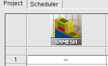
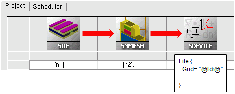

main menu
| module menu
| << previous section
| next section >>
main menu
| module menu
| << previous section
| next section >>
Sentaurus Mesh
1. Getting Started
1.1 Overview
1.2 Starting Sentaurus Mesh
1.3 Inputs
1.4 Outputs
1.5 Sections of the Command File
1.6 Sentaurus Mesh Integration in Sentaurus Workbench
1.7 Sentaurus Mesh and Sentaurus Structure Editor
1.8 Mesh Visualization
Objectives
- To introduce the mesh generator Sentaurus Mesh.
1.1 Overview
Sentaurus Mesh is a modular Delaunay 2D and 3D mesh generator that can create both axis-aligned and tensor meshes to be used in simulators that use the box discretization or finite-difference time-domain (FDTD) methods for spatial device discretization.
In addition, Sentaurus Mesh serves as a doping profile generator, which allows you to compile 2D and 3D doping profiles using both analytic profile descriptions and numerically simulated doping profiles.
The axis-aligned mesh generator of Sentaurus Mesh produces triangles in the case of 2D devices and tetrahedra in the case of 3D devices. Generated grids can be loaded into Sentaurus Device, Sentaurus Process, and Sentaurus Interconnect.
The tensor-product mesh generator of Sentaurus Mesh produces rectangular elements in two dimensions and cuboidal elements in three dimensions. Such grids are used in Sentaurus Device Electromagnetic Wave Solver and the TCAD to SPICE device simulators (Garand, Garand VE, and Garand MC).
Depending on the mesh generator used, Sentaurus Mesh produces different output formats. The axis-aligned mesh generator always produces a TDR unstructured mesh, and the tensor-product mesh generator selects the type of mesh depending on the target application.
1.2 Starting Sentaurus Mesh
To start Sentaurus Mesh on the command line, enter:
> snmesh <filename>
where <filename> indicates the name of a command file for mesh generation.
By default, Sentaurus Mesh runs in axis-aligned mode.
1.3 Inputs
In general, Sentaurus Mesh needs two files as input: a command file (.cmd) and a device geometry (boundary) file (_bnd.tdr). The command file must be an ASCII file, while the boundary file is a binary file in TDR format.
Sentaurus Mesh first locates the command file using the file name specified on the command line. If the file name does not have the .cmd extension, it is added automatically.
Sentaurus Mesh then looks at the inputFile parameter in the IOControls section of the command file (see Section 1.5 Sections of the Command File) to locate the input boundary file. If this parameter is not present, Sentaurus Mesh tries to guess the name of the boundary file according to the following rules:
- Check whether <filename>, entered on the command line, matches the pattern <string>_msh. If yes, check whether <string>_bnd.tdr exists.
- If it does not exist, check whether <filename>_bnd.tdr exists.
- If it does not exist, check whether <filename>.tdr exists.
1.4 Outputs
Sentaurus Mesh produces two output files:
- The output TDR file contains mesh, geometry, and doping information in TDR format. The file name can be specified with the outputFile parameter in the IOControls section, or it defaults to <filename>_msh.tdr when this parameter is not specified.
- A log file <filename>_msh.log contains the Sentaurus Mesh output protocol, which includes some information about meshing steps and mesh statistics.
Sentaurus Mesh can produce mesh files only in TDR format.
1.5 Sections of the Command File
You can specify several different types of information in the command file, for example, refinement information, doping profile information, and control parameters for the different mesh generators and tools.
The command file has different sections (see Table 1).
Examples of most sections are presented in this module.
| Section | Description |
|---|---|
| Title | The command file can start with an optional title statement. The keyword Title followed by a string in double quotation marks constitutes the title statement. For example: Title "Project X" |
| IOControls | Specifies an explicit input file containing the structure and an output file to which the generated mesh will be saved. |
| Definitions | Defines the sets of refinement parameters and profile definitions to be used in the Placements section. These sets are referred to using their unique reference names. |
| Placements | Defines the placement of instances of the definitions given in the Definitions section with respect to the current device. |
| Interpolate | Controls data interpolation. |
| AxisAligned | Controls the parameters for the axis-aligned mesh generator. |
| Offsetting | Defines the mesh lines obtained by layering from interfaces. |
| Delaunizer | Controls the behavior of the mesh delaunizer. |
| Tensor | Controls the tensor-product mesh generator. |
| Boundary | Controls the parameters related to boundary algorithms. |
| Tools | Specifies additional utilities available in Sentaurus Mesh. |
| QualityReport | Specifies the mesh quality statistics to be reported and the limits for the mesh quality criteria. |
| Structured | Specifies the parameters required to define a Josephson junction mesh. |
1.6 Sentaurus Mesh Integration in Sentaurus Workbench
There are two ways to run Sentaurus Mesh:
- From the command line (see Section 1.2 Starting Sentaurus Mesh).
- Having it as a tool within a Sentaurus Workbench project. Then, Sentaurus Workbench will launch Sentaurus Mesh automatically when a project is executed.
To add Sentaurus Mesh to a Sentaurus Workbench project:
- Choose Tool > Add.
- In the Add Tool dialog box, click Tools.
- In the Select DB Tool dialog box, select the Sentaurus Mesh icon and click OK.
- Click OK.
Then, the Sentaurus Mesh icon appears in the tool flow of the Sentaurus Workbench project (see Figure 1).

Figure 1. Sentaurus Mesh as part of a Sentaurus Workbench project.
A typical simulation scenario is where the command file for meshing is created by a preceding tool in the tool flow, such as Sentaurus Structure Editor. In such a case, you must indicate this in the tool properties (choose Tool > Properties). Otherwise, you must create the command file like any other tool in Sentaurus Workbench.
In Figure 2, the properties are selected such that Sentaurus Mesh will take a command file from the preceding Sentaurus Structure Editor tool.
{kind=link}
Figure 2. Tool Properties dialog box for setting Sentaurus Mesh preferences. (Click image for full-size view.)
Typically, mesh generation is followed by a device simulation, which uses grid and doping profiles as input (see Figure 3).

Figure 3. Typical Sentaurus Workbench tool flow with mesh generation followed by device simulation.
In Sentaurus Workbench, you can easily refer to a preceding mesh generation result in subsequent device simulation inputs. To specify an input file, insert the following statement in the command file:
File {
Grid= "@tdr@"
...
}
Then during preprocessing, Sentaurus Workbench automatically replaces @tdr@ with the actual file name:
File {
Grid= "n2_msh.tdr"
...
}
For details about setting up a tool flow and running a project, see the Sentaurus Workbench module.
1.7 Sentaurus Mesh and Sentaurus Structure Editor
Sentaurus Structure Editor is the main tool for generating a device boundary file and command files used by Sentaurus Mesh. For detailed information about doping profile generation and meshing strategy definition, see the Sentaurus Structure Editor module.
You can invoke Sentaurus Mesh from Sentaurus Structure Editor by choosing Mesh > Build Mesh, which displays the Build Mesh dialog box (see Figure 4).
{kind=link}
Figure 4. Sentaurus Structure Editor with Build Mesh dialog box. (Click image for full-size view.)
1.8 Mesh Visualization
The results of meshing can be visualized in Sentaurus Visual.
To load a TDR file in Sentaurus Visual, use the command:
> svisual <filename>_msh.tdr
To visualize a grid in Sentaurus Visual, click the Mesh button as indicated by the red arrow in Figure 5.
{kind=link}
Figure 5. Mesh visualization in Sentaurus Visual. (Click image for full-size view.)
For more details, see the Sentaurus Visual module.
main menu | module menu | << previous section | next section >>
Copyright © 2022 Synopsys, Inc. All rights reserved.